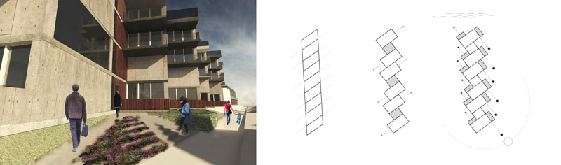

Margate flats
Residential project in Margate, UK, with a modular construction. The project is part of a masterplan - part of a teamwork - with a mixed use programme. The unit chosen for the individual project have been shifted from their original position, creating individual and communual areas, in which everyone has access to sunlight and view to the sea. The flats are indeed rich of sunlight at all the times of the day together with the passive ventilation. The design creates an equilibrium between the private and the community life of a residencial block, having social areas as the entrance steps, green areas and roof top; meanwhile the balconies have been designed to have a private view to the sea. Finally, the sliding doors decides the level of light/ventilation/privacy in every flat, capable of great flexibility.

01. Masterplan
The masterplan has been done through a grid, following the existing building lines, and by breaking it after to create voids and views to the sea. The private part of the site is raised 1.5m to create a visual difference. The steep hill at the end created a great opportunity for a stepping public space. The housing blocks are also designed as "stepping sticks" to achieve more south facing light.

02. Masterplan Wooden Model
the block chosen is in a particular and interesting part
of the overall masterplan. The west façade faces the road, having
a direct link that the other blocks do not have. Also, the same side
has a wide view to the sea. Even in its small proportions I saw a
potential for a good housing project.
03. Plans
The interior planning is designed thinking about flexibility, light and passive ventilation:
the blocks, 10m long, make the cross ventilation possible.
The open plan, the bedrooms have sliding doors, makes light travel all over the flat, being enlightened all day long thanks to its multiple expositions.
The bedrooms are east facing with private balconies, while the living room is on the west side of the flat with a more public bacony with a view to the seaside;
the kichen and bathroom services share a wall that goes vertically through the entire building.

04. Flats Construction Mondel
Being a housing project and not a public building one, I felt the
design should be completely focused on the people comfort. My
aim was therefore to find a form that would let each flat to have a
view to the sea and at the same time a south facing façade.
1. The block is divided into rectangles for every flat and shifted so
each one would get south sun light and a view to the sea. Every
two blocks, a circulation space completed of staircase and lift, is
placed (dark brown wood). This creates the opportunity for each
flat to have also west and east light.
2. The staircase core is reduced creating more views and light.
3. Addition of balconies following the same geometry
05. Study Sketches
06. West Entrance
The entrance is composed by a ramp and a staircase for every circulation tower. The steps are wide enough for people to sit on and to have a social area. The outside space of every flat has the privacy protected thanks to a 1.5m timber fence.Every two flats, there is a green shared area.
07. Roof-Top
Roof Design: Timber cladding and community garden.
08. East Side
each flat has its own private green area.
09. West Elevation